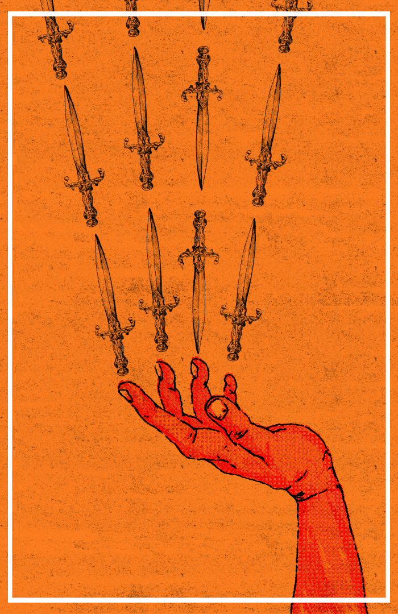
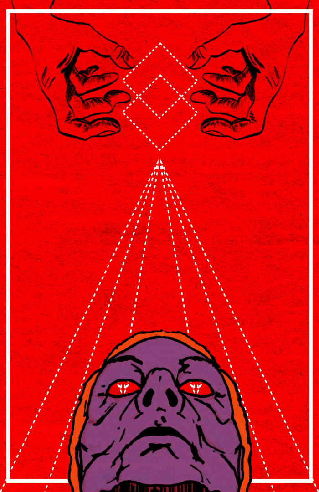
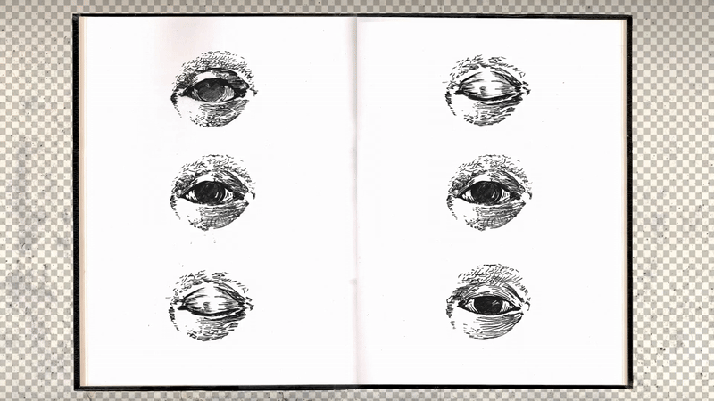
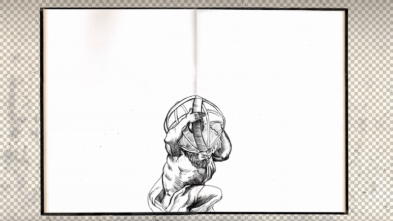

Proyecto Rubedox (2021 - 2023)
Entre el año 2021 al 2023 aproximadamente desarrollé una serie de animaciones experimentales bajo el alter ego de “Rubedox”. Inspirado por el imaginario de los antiguos alquimistas, el conocimiento esotérico y el neoplatonismo, quise combinar ese rico repertorio simbólico desde una mirada contemporánea a través de los bucles o “loops” visuales.
Movimiento Perpetuo
Serie de tres animaciones experimentales en forma de Gif Art.
1.- Una Rosa es una rosa (2022)

Animación gráfica digital reproducida en loop. Inspirado tanto en la famosa frase de la poeta Gertrude Stein como en una antigua ilustración de la Orden Rosacruz.
2.- Huevo Cósmico (2022)

3.- ¡Despierta! (2022)

Historia del ojo
A través del ojo y la mirada construimos nuestro mundo, nuestra realidad. Estas obras son reflexiones en forma de imágenes en movimiento sobre estos temas.

Argos Panoptes (2021)


Los Arcanos perdidos
Serie de cartas imaginarias animadas en forma de Gif Art.



Los sketchbooks (2022)
Bocetos animados que muestran mi proceso creativo detrás de las obras de Rubedox.


